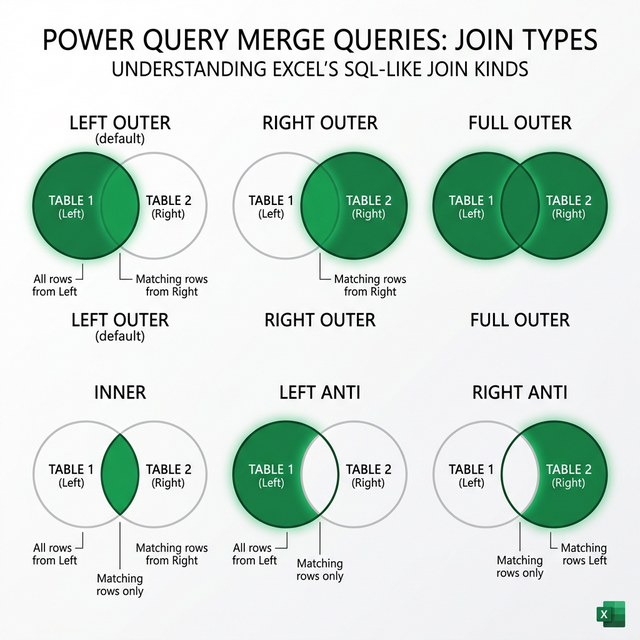

Gộp dữ liệu trong Power Query
Nắm vững kỹ thuật Merge Queries (JOIN), Append Queries (nối dọc), Merge Columns (gộp cột) và Combine Files từ thư mục.
6.1 Tổng quan về gộp dữ liệu
Power Query cung cấp ba cách chính để gộp dữ liệu:
Merge Queries
Gộp ngang — kết hợp cột từ 2 bảng dựa trên khóa chung (tương tự JOIN trong SQL)
Append Queries
Gộp dọc — nối các dòng từ nhiều bảng có cùng cấu trúc (tương tự UNION)
Merge Columns
Gộp nội dung nhiều cột thành 1 cột duy nhất với delimiter tùy chọn
6.2 Merge Queries (Nối ngang - JOIN)
Merge Queries kết hợp hai bảng dựa trên các giá trị khớp từ cột khóa — tương tự các phép JOIN trong SQL.

Các bước thực hiện Merge Queries
Mở Merge
Trong Power Query Editor → tab Home → Merge Queries (hoặc Merge Queries as New)
Chọn bảng thứ hai
Từ dropdown, chọn bảng (query) muốn gộp vào bảng hiện tại
Chọn cột khóa
Nhấp vào cột khóa trên bảng thứ nhất và cột khóa tương ứng trên bảng thứ hai. Giữ Ctrl để chọn nhiều cột khóa.
Chọn Join Kind
Chọn loại nối phù hợp (xem bảng bên dưới)
Expand cột kết quả
Sau khi Merge, một cột Table xuất hiện. Nhấp icon ↔️ trên tiêu đề cột → chọn cột muốn thêm → OK
6 loại Join Kind
| Join Kind | Mô tả | SQL tương đương |
|---|---|---|
| Left Outer (mặc định) | Tất cả dòng từ bảng trái + dòng khớp từ bảng phải | LEFT JOIN |
| Right Outer | Tất cả dòng từ bảng phải + dòng khớp từ bảng trái | RIGHT JOIN |
| Full Outer | Tất cả dòng từ cả hai bảng (khớp và không khớp) | FULL OUTER JOIN |
| Inner | Chỉ các dòng có giá trị khớp ở cả hai bảng | INNER JOIN |
| Left Anti | Chỉ các dòng từ bảng trái KHÔNG có match ở bảng phải | NOT IN / NOT EXISTS |
| Right Anti | Chỉ các dòng từ bảng phải KHÔNG có match ở bảng trái | NOT IN / NOT EXISTS |
- Left Outer: Khi muốn giữ tất cả dữ liệu gốc và bổ sung thông tin
- Inner: Khi chỉ cần dữ liệu có match ở cả hai bảng
- Left Anti: Khi cần tìm dữ liệu KHÔNG tồn tại trong bảng kia (rất hữu ích!)
// Merge bảng DonHang với bảng SanPham theo cột MaSP
= Table.NestedJoin(
DonHang, // Bảng trái
{"MaSP"}, // Cột khóa bảng trái
SanPham, // Bảng phải
{"MaSP"}, // Cột khóa bảng phải
"SanPham", // Tên cột kết quả
JoinKind.LeftOuter // Loại join
)6.3 Append Queries (Nối dọc - UNION)
Append Queries kết hợp các dòng từ nhiều bảng theo chiều dọc — tất cả bảng nên có cùng tên cột.
Các bước thực hiện
Mở Append
Tab Home → Append Queries (vào query hiện tại) hoặc Append Queries as New (tạo query mới)
Chọn số bảng
Two tables: Nối 2 bảng. Three or more tables: Chọn nhiều bảng từ danh sách Available → nhấn Add.
Kết quả
Tất cả dòng từ các bảng được xếp chồng. Nếu tên cột không khớp, cột sẽ chứa null.
6.4 Merge Columns (Gộp cột)
Gộp nội dung nhiều cột thành 1 cột với ký tự phân cách tùy chọn:
- Chọn nhiều cột muốn gộp (giữ Ctrl + nhấp chọn)
- Tab Transform → Merge Columns
- Chọn Separator: Space, Comma, Tab, Semicolon, hoặc Custom
- Nhập tên cho cột mới → OK
Ví dụ
| Họ đệm | Tên | Separator | Kết quả (Gộp) |
|---|---|---|---|
| Nguyễn Văn | An | Space | Nguyễn Văn An |
| Trần Thị | Bình | Comma | Trần Thị, Bình |
6.5 Combine Files from Folder
Gộp tất cả file trong thư mục thành một query duy nhất (đã giới thiệu ở Chương IV):
- Data → Get Data → From File → From Folder
- Chọn thư mục → Combine & Transform Data
- Chọn file mẫu → OK
- Power Query tự động:
- Tạo helper queries (Parameter, Function, Sample File)
- Đọc mỗi file theo cùng logic
- Gộp tất cả vào 1 bảng với cột Source.Name
6.6 Fuzzy Merge (So khớp mờ)
Fuzzy Merge cho phép nối bảng ngay cả khi giá trị khóa không khớp chính xác — rất hữu ích khi dữ liệu có lỗi chính tả, khoảng trắng thừa, hoặc định dạng không đồng nhất.
Cách sử dụng
- Thực hiện Merge Queries như bình thường
- Đánh dấu ☑️ Use fuzzy matching to perform the merge
- Nhấn ⚙️ Fuzzy matching options để cấu hình:
- Similarity threshold: 0.0 → 1.0 (0.8 = 80% giống nhau)
- Ignore case: Bỏ qua hoa/thường
- Match by combining text parts: Ghép từng phần
- Number of matches: Số lượng kết quả khớp tối đa
- Transformation table: Bảng mapping thay thế (ví dụ: "TP.HCM" = "Hồ Chí Minh")
Ví dụ
| Bảng A (Khách hàng) | Bảng B (Đơn hàng) | Fuzzy Match? |
|---|---|---|
| Nguyễn Văn An | Nguyen Van An | ✅ (bỏ dấu) |
| Công ty ABC | Cty ABC | ✅ (viết tắt) |
| Microsoft Corp | Microsoft Corporation | ✅ (threshold 0.7) |
= Table.FuzzyNestedJoin(
BangA, {"TenKH"},
BangB, {"TenKH"},
"Matched",
JoinKind.LeftOuter,
[
Threshold = 0.8,
IgnoreCase = true,
IgnoreSpace = true
]
)6.7 Cross Join (Tích Descartes)
Cross Join tạo tất cả tổ hợp có thể giữa các dòng từ hai bảng. Power Query không có nút Cross Join trực tiếp, nhưng có thể thực hiện qua Custom Column:
Thêm cột Custom
Trong bảng A, thêm Custom Column: = BangB (tham chiếu toàn bộ bảng B)
Expand cột Table
Nhấp icon ↔️ trên cột mới → chọn tất cả cột từ bảng B → OK
Ví dụ ứng dụng
Kết hợp danh sách Sản phẩm (3 item) × Màu sắc (4 màu) = 12 tổ hợp
6.9 Shared Dimension (Bảng chiều dùng chung)
Khi nhiều fact tables cùng tham chiếu đến 1 dimension nhưng với tên cột khác nhau, cần tạo Shared Dimension:
// Gộp danh sách sản phẩm từ nhiều nguồn
let
SP_BanHang = Table.SelectColumns(BanHang, {"MaSP", "TenSP"}),
SP_NhapKho = Table.SelectColumns(NhapKho, {"MaSanPham", "TenSanPham"}),
// Chuẩn hóa tên cột
SP_NhapKho_Renamed = Table.RenameColumns(SP_NhapKho,
{{"MaSanPham","MaSP"}, {"TenSanPham","TenSP"}}),
// Gộp + loại trùng = Shared Dimension
Combined = Table.Distinct(Table.Combine({SP_BanHang, SP_NhapKho_Renamed}))
in Combined6.10 Dates Between Merge (Join theo khoảng ngày)
Merge chuẩn chỉ so khớp giá trị bằng nhau. Để join theo khoảng ngày (between), phải dùng Cross Join + Filter:
// Bảng GiaoDich: NgayGD | SoTien
// Bảng TyGia: TuNgay | DenNgay | TyGia
let
// Tạo custom column: lookup tỷ giá theo ngày giao dịch
Result = Table.AddColumn(GiaoDich, "TyGia",
each let ngay = [NgayGD] in
Table.SelectRows(TyGia,
each [TuNgay] <= ngay and ngay <= [DenNgay]
){0}[TyGia]
)
in Result6.11 Age Banding (Phân nhóm theo khoảng giá trị)
Phân nhóm tuổi, doanh thu, hay bất kỳ giá trị nào vào các khoảng (band):
// Bảng BandTable:
// FromAge | ToAge | NhomTuoi
// 0 | 17 | "Vị thành niên"
// 18 | 35 | "Thanh niên"
// 36 | 55 | "Trung niên"
// 56 | 100 | "Cao tuổi"
= Table.AddColumn(NhanVien, "NhomTuoi",
each let tuoi = [Tuoi] in
Table.SelectRows(BandTable,
each [FromAge] <= tuoi and tuoi <= [ToAge]
){0}[NhomTuoi]
)6.12 Find Mismatch Rows (Tìm dòng không khớp)
Dùng Left Anti Join để tìm dòng có trong bảng A nhưng không có trong bảng B:
// Tìm nhân viên có trong BảngLương nhưng KHÔNG có trong BảngNhânViên
= Table.NestedJoin(
BangLuong, "MaNV",
BangNhanVien, "MaNV",
"Match", JoinKind.LeftAnti
)
// Kết quả: chỉ trả về dòng KHÔNG khớp → dùng để audit dữ liệu| Join Type | Tìm gì |
|---|---|
| Left Anti | Dòng ở bảng trái KHÔNG khớp bảng phải |
| Right Anti | Dòng ở bảng phải KHÔNG khớp bảng trái |
| Full Anti | Tất cả dòng KHÔNG khớp ở cả 2 bảng (= Left Anti UNION Right Anti) |
6.13 Fuzzy Grouping & Fuzzy Clustering
Ngoài Fuzzy Merge (đã học ở 6.7), sách Mastering PQ giới thiệu thêm 2 kỹ thuật:
Fuzzy Grouping
Nhóm các giá trị gần giống nhau thành 1 đại diện:
// Dữ liệu gốc:
// "Microsoft Corp", "Microsoft Corporation", "Microsft" → gộp thành "Microsoft Corporation"
// "Apple Inc", "Apple Inc.", "APPLE" → gộp thành "Apple Inc"
// Cách dùng: Transform → Group By → ☑️ Use fuzzy grouping
// Hoặc M code:
= Table.FuzzyGroup(Source, "TenCongTy", {
{"Representative", each List.First([TenCongTy])},
{"Count", each Table.RowCount(_)}
}, [Threshold = 0.7])Fuzzy Clustering (tìm giá trị tương tự)
Dùng Table.FuzzyNestedJoin kết hợp self-join để tìm các nhóm giá trị tương tự:
= Table.FuzzyNestedJoin(
Source, "TenKhachHang",
Source, "TenKhachHang",
"Cluster", JoinKind.LeftOuter,
[Threshold = 0.8, IgnoreCase = true, IgnoreSpace = true]
)6.14 Lưu ý khi Merge trên cột Text
- Khoảng trắng thừa: " HCM" ≠ "HCM" → Dùng Text.Trim trước khi merge
- Chữ hoa/thường: "hcm" ≠ "HCM" → Dùng Text.Upper hoặc Text.Lower
- Ký tự ẩn: Unicode invisible chars → Dùng Text.Clean
- Encoding khác nhau: "Hà Nội" (UTF-8) ≠ "Hà Nội" (ANSI) → Chuẩn hóa encoding
Luôn Transform → Trim → Clean → Lowercase cả 2 cột trước khi Merge!
6.15 Combining Mismatched Tables (Gộp bảng cấu trúc khác nhau)
Khi Append các bảng có cấu trúc cột khác nhau (tên cột khác, số cột khác), Power Query tự tạo null cho cột thiếu:
Ví dụ: 2 chi nhánh báo cáo khác nhau
| Chi nhánh HCM | Chi nhánh HN | |||||
|---|---|---|---|---|---|---|
| MaSP | TenSP | SoLuong | ProductCode | ProductName | Qty | |
| SP01 | Laptop | 50 | SP01 | Laptop | 30 | |
// Bước 1: Chuẩn hóa tên cột
let
HN_Renamed = Table.RenameColumns(HN, {
{"ProductCode","MaSP"}, {"ProductName","TenSP"}, {"Qty","SoLuong"}
}),
// Bước 2: Chọn cùng bộ cột
ColsChuan = {"MaSP", "TenSP", "SoLuong"},
HCM_Selected = Table.SelectColumns(HCM, ColsChuan),
HN_Selected = Table.SelectColumns(HN_Renamed, ColsChuan),
// Bước 3: Append
Combined = Table.Combine({HCM_Selected, HN_Selected})
in Combined6.16 Preserving Context (Giữ thông tin nguồn khi Append)
Khi gộp nhiều file/sheet, cần giữ metadata nguồn (tên file, tên sheet) để biết dữ liệu đến từ đâu:
// Gộp từ Folder + giữ tên file và tên sheet
let
Source = Folder.Files("D:\Data\BaoCao"),
FilterXlsx = Table.SelectRows(Source,
each Text.EndsWith([Name], ".xlsx")),
// Thêm cột Data chứa nội dung mỗi file
AddData = Table.AddColumn(FilterXlsx, "SheetData",
each let
wb = Excel.Workbook([Content]),
sheet = wb{0}[Data],
headers = Table.PromoteHeaders(sheet)
in headers),
// Giữ cột Name (tên file) + Expand SheetData
SelectCols = Table.SelectColumns(AddData, {"Name", "SheetData"}),
Expanded = Table.ExpandTableColumn(SelectCols, "SheetData",
Table.ColumnNames(SelectCols{0}[SheetData])),
// Rename cột "Name" → "SourceFile"
Renamed = Table.RenameColumns(Expanded, {{"Name", "SourceFile"}})
in Renamed
// Kết quả: mỗi dòng biết đến từ file nào!Bài tập 6.1: Merge Queries — Kết hợp thông tin
Mục tiêu: Thực hành Merge Queries với các loại Join
- Tạo 2 bảng trong Excel:
Bảng DonHang:
MaDH MaSP SoLuong NgayDat DH001 SP01 10 01/01/2024 DH002 SP03 5 05/01/2024 DH003 SP02 8 10/01/2024 DH004 SP05 3 15/01/2024 Bảng SanPham:
MaSP TenSP DonGia SP01 Bút bi 5000 SP02 Vở ô ly 8000 SP03 Thước kẻ 12000 SP04 Tẩy 3000 - Mở cả 2 bảng vào Power Query (From Table/Range)
- Chọn query DonHang → Home → Merge Queries
- Chọn bảng SanPham, khóa nối = MaSP
- Thử lần lượt các Join Kind:
- Left Outer: DH004 (SP05) sẽ có TenSP = null (vì SP05 không có trong SanPham)
- Inner: DH004 sẽ bị loại ra
- Left Anti: Chỉ còn DH004 (sản phẩm không tồn tại)
- Với Left Outer: Expand cột SanPham → chọn TenSP, DonGia
- Thêm Custom Column: ThanhTien = [SoLuong] * [DonGia]
- Close & Load
Bài tập 6.2: Append Queries — Gộp dữ liệu nhiều tháng
Mục tiêu: Thực hành Append Queries
- Tạo 4 bảng trên 4 sheet: Q1, Q2, Q3, Q4
- Cấu trúc mỗi bảng: MaNV | HoTen | DoanhSo | Quy
- Mỗi bảng 3-5 dòng
- Mở tất cả 4 bảng vào Power Query
- Chọn query Q1 → Home → Append Queries
- Chọn Three or more tables → thêm Q2, Q3, Q4 → OK
- Kiểm tra dữ liệu đã gộp đủ 4 quý
- Đổi tên query thành "DoanhSo_CaNam"
- Close & Load
Bài tập 6.3: Merge Columns — Gộp cột địa chỉ
Mục tiêu: Thực hành Merge Columns
- Tạo bảng:
SoNha Duong Phuong Quan ThanhPho 123 Nguyễn Huệ Bến Nghé Quận 1 TP.HCM 45 Trần Hưng Đạo Phạm Ngũ Lão Quận 1 TP.HCM - Mở Power Query
- Chọn tất cả cột SoNha, Duong, Phuong, Quan, ThanhPho (giữ Ctrl+Click)
- Transform → Merge Columns → Separator: Comma-Space
- Đặt tên cột mới: "ĐịaChỉĐầyĐủ"
- Kết quả: "123, Nguyễn Huệ, Bến Nghé, Quận 1, TP.HCM"
- Close & Load